Hick’s Law
The more choices people have, the longer they take to decide.
In the design
At most two buttons in a hero, and only one filled button on each screen.
Case study · Concept project
Green Future is a concept nonprofit in Utah that plants trees and cleans up parks. I designed its website from scratch: I asked 17 people what they need, studied nine real nonprofit sites, built a design system, and made a mobile prototype for two kinds of visitors.
.png)
.png)
How the project went
A fictional Utah nonprofit, the problem it faces, and three goals.
A 17-person survey, a study of nine nonprofit websites, and a design check with UI UX Pro Max.
Two personas, a sitemap, and two user flows.
26 wireframe frames, a design system, a component library, and six pages in three sizes.
Two mobile flows, an accessibility review, and a test with 8 people in Maze.
Green Future is a small, volunteer-run group in Utah. It plants trees, cleans up parks, and depends on volunteers and small donations. With no marketing team, its website has to do the persuading.
Problem statement
People who care about the environment often don’t know where to start. Signing up feels like a big promise, and a small donation can feel like it doesn’t matter. The website has to close the gap between caring and acting.
Green Future is a made-up nonprofit, so its events and its numbers (like trees planted) are sample content. But the work behind it is real: I asked real people what they need, studied real nonprofit sites, and gave every design choice a reason.
What I wanted to achieve
Someone can find an event and sign up in under 2 minutes, on a phone.
Donors can see how their money is used before they are asked to give.
Every page has one main action, and every color pair meets WCAG 2.1 AA.
A short survey told me what visitors need. A study of real nonprofit websites showed what works and what doesn’t. Together they gave me clear rules to design with.
A nonprofit like this has two kinds of visitors: people who want to join an event, and people who want to give. They come for different reasons, so I couldn’t design for one imaginary visitor.
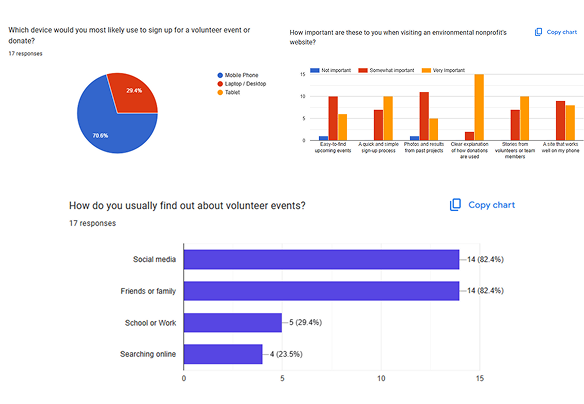
What 17 people told me
Share of 17 people (they could pick more than one)
Share of 17 people (they could pick more than one)
Only 17 people answered, 58.8% of them aged 18–24, and I found them through my own network. The results show clear patterns, but they don’t speak for everyone.
What nine nonprofit sites do well, and where they trip
I looked at how real nonprofits ask people to volunteer and donate, and noted their colors, photos and layouts. The sites were EDF, The Ocean Cleanup, Red Cross, Youth Climate Corps BC, SeaTrees, Earth Day, The Nature Conservancy, EWG and TreeUtah.
One pattern stood out: most use green or blue as the main color, with a warm color for buttons. I chose green as Green Future’s main color, and used it for the buttons too, so the whole site feels calm and consistent.
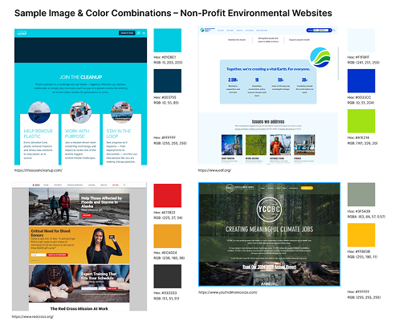
Volunteer events
Clear actions
Donations
Readable design
Youth Climate Corps BC and Earth Day put small text on dark photos, and EWG’s sign-up sits on a busy photo. Green Future keeps text on plain backgrounds and sign-up short.
On the pages I looked at, none put clear event details, a very short sign-up and local impact numbers in one place. That gap became Green Future’s space.
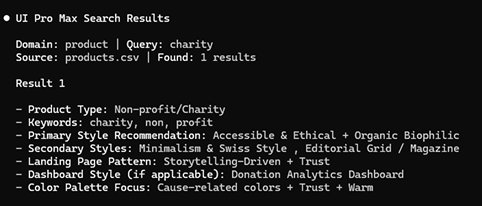
Checking my direction with UI UX Pro Max
UI UX Pro Max is a free design tool with a large collection of styles, colors, fonts, and UX checklists. I installed it in Claude Code and told it I was building a charity/nonprofit website. It suggested design styles, color palettes, fonts, and checklist items based on its design database. I compared these suggestions with my survey results and kept the options that best fit my users. I then used Claude Code to turn these suggestions, along with my own rules and research, into a design system. I made the final design decisions myself, including choosing the friendly green color palette and Nunito font.
What the research added up to
So the site had to be quick on a phone, clear about where money goes, and honest about what joining involves.
Each one became a rule I could hold the design to.
70.6% would sign up or donate on a phone.
So I did
Mobile-first layouts, buttons at least 44px tall, and forms made for thumbs.
82.4% hear about events on social media or from friends and family. Only 23.5% search online and go straight to a website.
So I did
Every event gets its own page with all the facts and a Share button.
58.8% only want to give a name and email.
So I did
Sign-up asks for name and email only. No account is needed.
88.2% want to see exactly how a donation is used.
So I did
The Impact Calculator and “How donations are used” sit above the payment form.
76.5% would give after seeing results, and 10 of 17 rated volunteer stories “very important”.
So I did
Project photos sit next to the donate options, and volunteer stories get their own section.
Unclear purpose and too much information made people leave.
So I did
One plain sentence under every page heading, and no more than two buttons in a hero.
Four ideas from class that gave me a reason for each layout choice.
The more choices people have, the longer they take to decide.
In the design
At most two buttons in a hero, and only one filled button on each screen.
Big targets that are close to your thumb are easier to hit.
In the design
Buttons at least 44px tall, and the main action within thumb reach on mobile.
People expect a site to work like the ones they already know.
In the design
A hamburger menu, a familiar footer, and bottom sheets that feel like phone apps.
The one thing that looks different gets noticed.
In the design
Only the main action is filled green. Everything else is an outline.
Each step built on the one before. I changed my mind several times, and the research told me when.
Two people to keep in mind
Alex is a 21-year-old student who wants to help but doesn’t know where to start. Alex uses a phone for everything and hates long forms.
Jordan is 29 and works full time. Jordan would rather give than volunteer, but wants proof that small gifts matter.
Their names and details are made up. Their needs come straight from the survey.
See the full persona cards in Figma →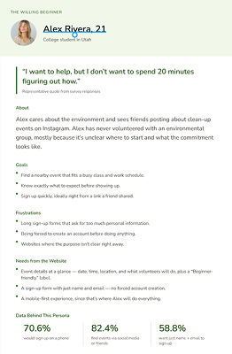
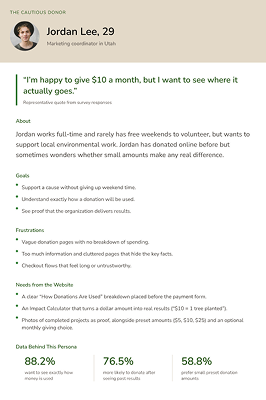
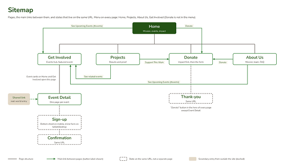
Six pages and one shared-link door
Home, Get Involved, Projects, Donate, About Us, and a new page: Event Detail. It is the most important page, because people land on it from a link a friend shares, so it has to make sense on its own.
Sign-up, confirmation and thank-you are states of the same page, not extra pages.
Two paths through the site
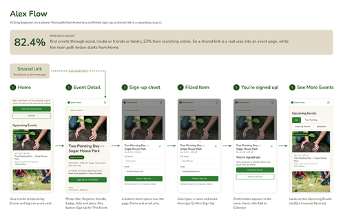
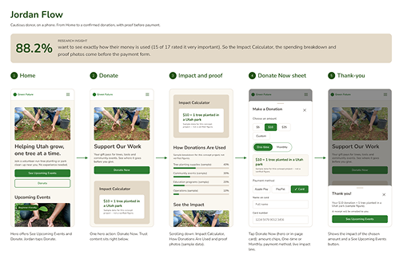
26 frames in grey boxes
I started with plain grey boxes so I could settle the structure before thinking about color. There are six pages in three sizes (mobile, tablet, desktop), plus eight frames for the sign-up and donation forms: empty, filled, error and success.
I started with mobile, because most people use a phone.
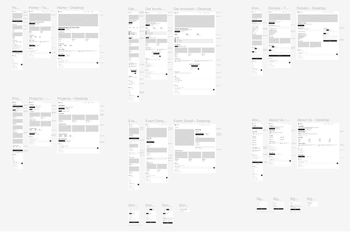
Some first ideas didn’t work, so I changed them.
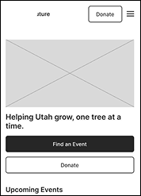
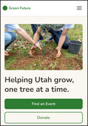
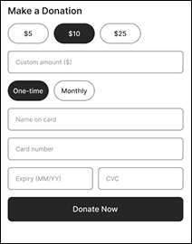
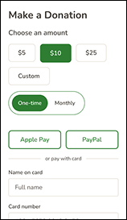
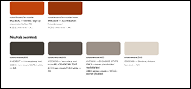
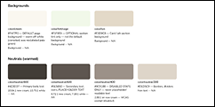
It was only events and questions. I added “How it works” steps, volunteer stories and a “Bring a friend” section, so it felt like a place for people.
An accent color made Donate look different, and some buttons looked like warnings. I switched to one theme: green fill for the main action, green outline for the second.
The survey showed people avoid big promises, so the main invitation became “Join Your First Event”.
I put it in a centered rounded card and removed its email box, because the footer already has one.
The header already has the menu, so I removed the repeated links and kept the mission, email sign-up, contact and social icons.
It opens a list, not one event, so the button became “See Upcoming Events”.
I moved Donate into the hero of each page. It is still one tap away, and the menu stays clean.
Figma’s scroll didn’t reach them reliably, so on mobile, sign-up and donation now open as bottom sheets, a pattern phone users already know.
Green, calm, and easy to read
Green is the main color, on warm off-white backgrounds. There are no gradients and no effects, only flat color and real photos, so it feels like a real local group and not a tech startup.
Nunito for headings and Nunito Sans for text feel friendly and are easy to read on a phone.
Open the design system in Figma →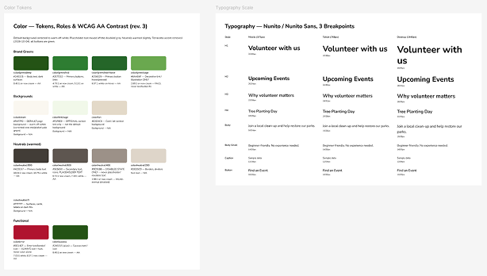
#245315
Headings and dark bands
#2E7D32
Buttons and links
#6AA84F
Decoration only
#FAF7F0
Page background
#E3D9C8
Cards and bands
#F1F8E9
Optional section tint
#423D37
Body text
#B0142F
Errors, with icon and text
Headings: Nunito Bold
Helping Utah grow, one tree at a time.
Text: Nunito Sans Regular
Join a volunteer-run tree planting or park clean-up near you. No experience needed.
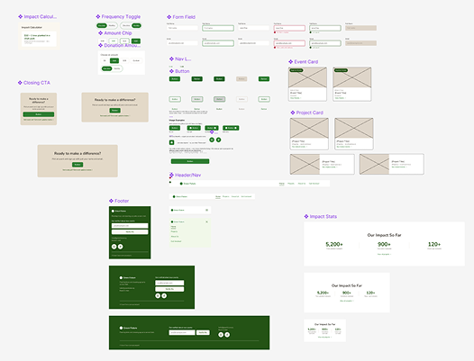
Reusable parts, so one change updates every page
I built the parts once and used them everywhere, so the pages stay consistent.
Six pages, three sizes
I built Home, Get Involved, Projects, Event Detail, Donate and About Us on mobile, tablet and desktop, using the components. Every page opens with one plain sentence about what it is for.
Open the surface comps in Figma →Two buttons (See Upcoming Events and Donate), upcoming events, impact numbers and volunteer stories.
A featured event, how it works, filters and events, stories, and a “Bring a friend” prompt.
Ongoing projects, completed ones with photos as proof, and impact numbers.
The key page: date, place, what you’ll do, how long, what to bring, and one sign-up button.
Impact Calculator, how donations are used, photos, then a short donation form.
Mission, values, the team and volunteer spotlights.

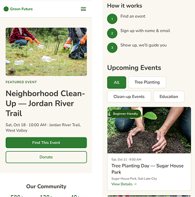
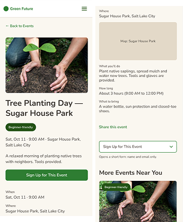
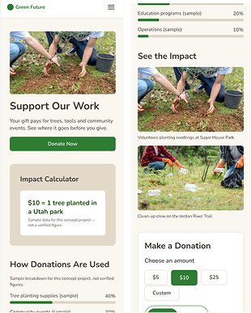
Two mobile flows you can tap through
Alex’s flow: open Home, tap an event, then tap Sign Up. A sheet slides up. Tap a field and the form fills with sample details. Confirm, and “You’re signed up!” appears.
Jordan’s flow: open Home, tap Donate, then Donate Now. A sheet opens where you choose an amount, how often to give, and how to pay. The impact line updates as the amount changes. Confirm, and a thank-you appears.
Before calling it done, I reviewed every page, every size and the prototype with the UI UX Pro Max checklist and an accessibility review. Then I tested the prototype with 8 people in Maze.
Results from a Maze test: 8 people did the sign-up task and 7 did the donation task. A small test shows patterns, not proof.
Results from a scripted check of all six pages, in all three sizes, and the prototype.
Three problems, fixed before I finished.
Green text on the tan call-to-action card was 3.67:1, below the 4.5:1 needed. It is now deep green at 6.47:1, fixed once in the component and updated in 21 places.
Navigation links were only 22–28px tall. They are now 44px tall, so they are easier to tap.
Some labels were 10 or 11px. They are now at least 12px.
Did the design meet the three goals?
Mobile-first layouts, shareable event pages, and sign-up with a name and email only.
Tested: 8 of 8 signed up, about 83 seconds on average
The Impact Calculator and the spending breakdown come before the payment form.
Tested: 7 of 7 finished the donation task
One main action per page, a purpose line under every heading, and AA color pairs.
Checked: 0 contrast failures. Ease rated 5 / 5.
It was a small test, so it shows patterns, not proof. My goal was to sign up in under 2 minutes, and the average was about 83 seconds. About 1 in 3 taps missed a button, and some people took a longer way to find Donate, because it is not in the menu. Next, I will make Donate easier to find and test again with more people.
Green Future now goes from a first idea to a tap-through prototype that I tested with 8 people. The research shaped nearly every choice. The biggest next step is to make Donate easier to find and test again.
I thought the homepage mattered most. The survey showed that most people hear about events from friends and social media, so many would likely land straight on an event page. The Event Detail page became the heart of the project.
I used UI UX Pro Max to get suggestions for the visual style, color palette, typography, and UX checklist. Based on these suggestions, I used Claude Code with Figma to build the design system, including the color and typography systems. I then used the design system to build the wireframes and surface comps. After completing the surface comps, I used AI to help create prototypes for two user flows: sign-up and donation, based on my requirements. I reviewed the results at each step, decided what to keep, and requested fixes when needed.
Make Donate easier to find, then test again with more people and compare with this first test.
Grey-box layouts for six pages in three sizes, plus the form states.
Open in Figma → (wireframes)Colors, type and spacing, with contrast ratios.
Open in Figma → (design system)The full visual design for each page.
Open in Figma → (surface comps)The Alex and Jordan flows on mobile.
Open in Figma → (prototype)